The LEGO Group's most recent multiplayer online game, Chima Online,
combines the obstacle course fun of the LEGO Travelers Tales games with a social gameplay experience.
I find it vaguely similar to yet vastly different from LEGO Universe.
The payment model:
Chima Online uses the Freemium model. (Freemium is slang for "most of the content is free, but extra stuff costs money")
It has a monthly membership and a store to directly buy Gold Bricks (an in-game currency).
I wouldn't call it "Pay2Win," because there is no competition between paying and non-paying players.
The Online aspect:
Chatting and Friends lists exist. You can visit the Outpost (player-owned home) of a friend,
and link up with them in the larger gameworld by clicking on them in the Map.
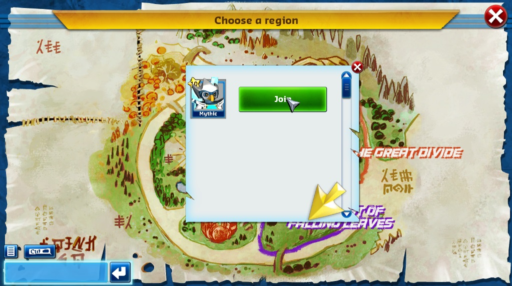
So far, there can only be 4 players in one zone at a time, so each zone is really a large "dungeon."
When it comes to communication, so far there is only Quick Chatting; but actual keyword chatting will come later.
You can use the in-game player market to buy or sell items (using the in-game currency).
Gameplay and LEGO aspects:
Character creation:
There are 4 tribes to choose from, all of which are on the good-guy side:
Lions, Eagles, Gorillas and (to my surprise) Bears. Heads, torsos and legs can use three different colors.
The way you play in terms of fighting enemies is customizable, so there are no "Classes" to worry about.
Unfortunately, your character is very restricted when it comes to names (so far).
You can only use names like "Solo AvianTracker" or "Epic WillfulSpark."
Travel:
Travel through the open gameworld is much more like a LEGO Travelers Tales game than what you would
find in a typical MMO (Massively Multiplayer Online game), which I find refreshing.
Players can't jump, but there are obstacle courses featuring things like spinning blades and pressure pads.
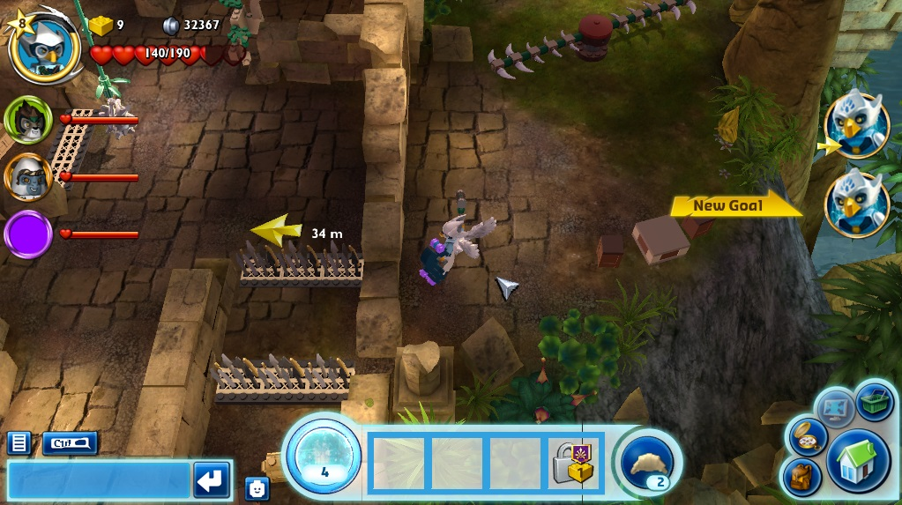
There is a good balance between planning your way through obstacle courses and smashing enemy hordes.
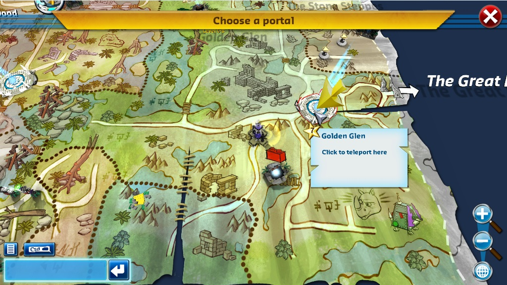
The pathways in zones are very non-linear.
Scattered throughout the gameworld are Checkpoints (places to rebuild after getting smashed) and
Portals (which you can teleport to directly from your outpost).
Quests / Missions:
Based on the first 8 levels I've played through so far, there is one central series of quests and side quests that pop up.
In most MMOs, players must find quest-giving Non-Player Characters; in Chima Online, quests automatically appear on the screen.
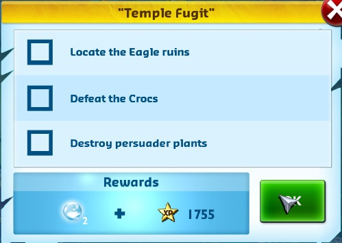
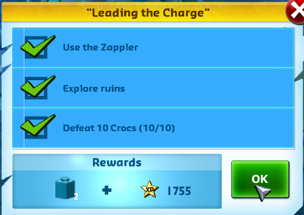
Also, there is actual voice dialog for every NPC involved in a quest (which I'm sure kids will find appealing).
The quest experience is somewhat linear, but then again most quest experiences are linear.
Currencies:
There are two currencies: The plentiful Studs and the special Gold Bricks.
If you've played a LEGO Travelers Tales game, you'll know Studs can be collected by smashing scenery and baddies.
Gold Bricks are collected from Quests, visiting the Outposts of friends, and by being lucky enough to find one.
Both currencies are used to buy and upgrade buildings, in addition to buying items off the market.
Combat:
Combat is straight-forward: Whack a baddy until they break apart.
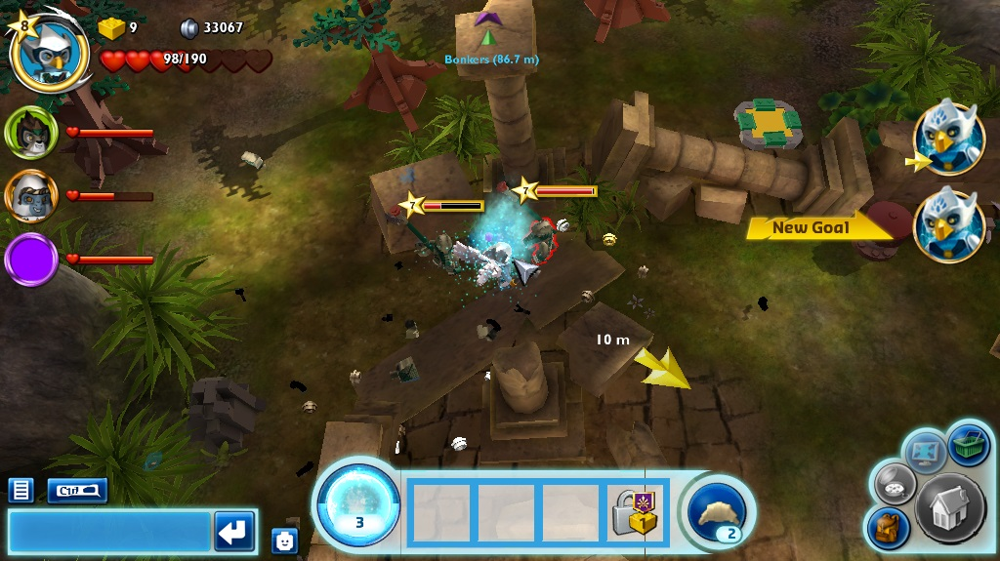
Weapons with different effects and craftable deployables take the roll of "Classes,"
which I find refreshing because there is no single playstyle to be confined to.
Also, you can carry two different weapons at the same time, each controlled by separate mouse buttons.
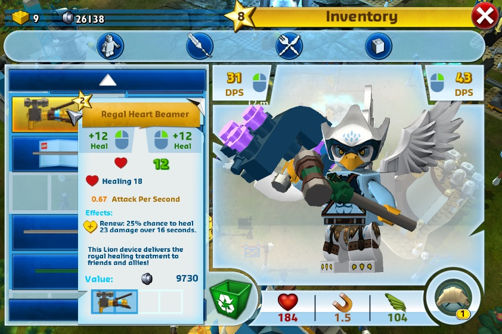
My primary weapon is ranged, and I use a stronger melee weapon when baddies get too close.
However, you could have any arrangement of weapons.
In fact, you are allowed to have a healing gun in each hand, which I think is great!
Another aspect of combat I find interesting is the use of Chi power-ups, which make you invincible
for a short time. You will often find these useful when you find yourself outnumbered by enemies, so things
aren't too hard. Chi power-ups can be found in the gameworld and earned from quests.
Crafting and Items:
Chima Online excels in this area where the last multiplayer online game created by
The LEGO Group failed; LEGO Universe didn't even have crafting.
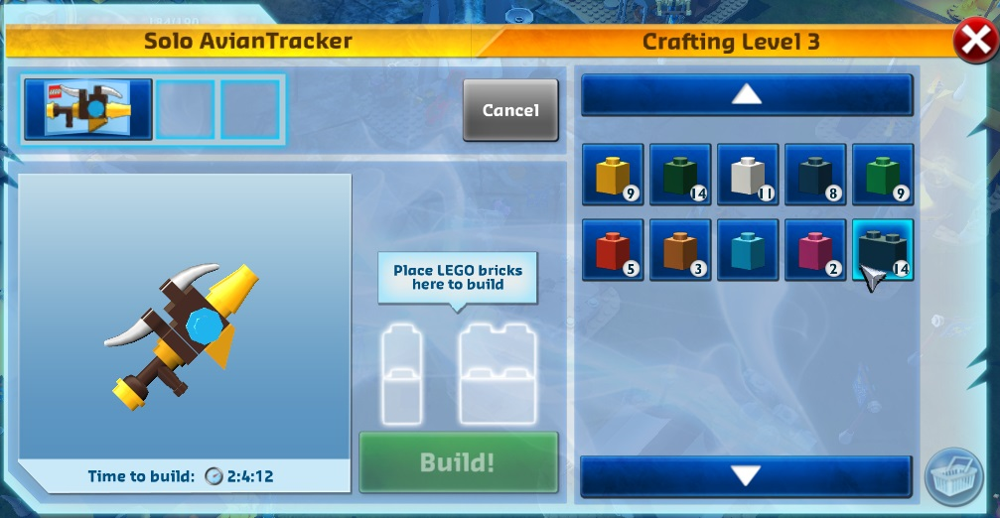
Not only can you craft your own weapons and clothes, you can also color them based on which bricks you're using.
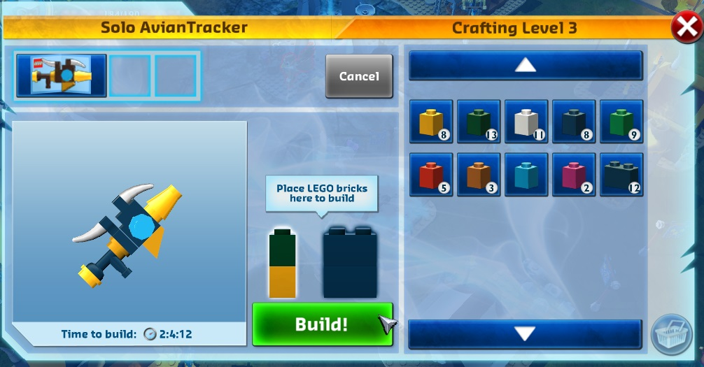
In order to craft an item, one must obtain its Building Instructions, in addition to collecting some bricks.
The two biggest flaws with crafting:
*You have a very limited variety of 1x2 brick colors in lower levels.
*Instructions disappear after you craft its respective item (you'd have to obtain them again).
However, there are buildings you can place in your Outpost that give you bricks (more on that coming up next).
Another issue I think needs to be addressed is the lack of an infinite venue to buy health-restoration consumables.
In the first several levels, I had to whack enemies and props to gather them, and I never had more than 5 at a time.
Perhaps there are or will be a consumable-producing building for Outposts.
Building and Outposts:
Chima Online does not have true brick-by-brick building like LEGO Universe.
Bricks, as mentioned earlier, are used for crafting items.
However, you CAN customize your Outpost with buildings that serve different functions.
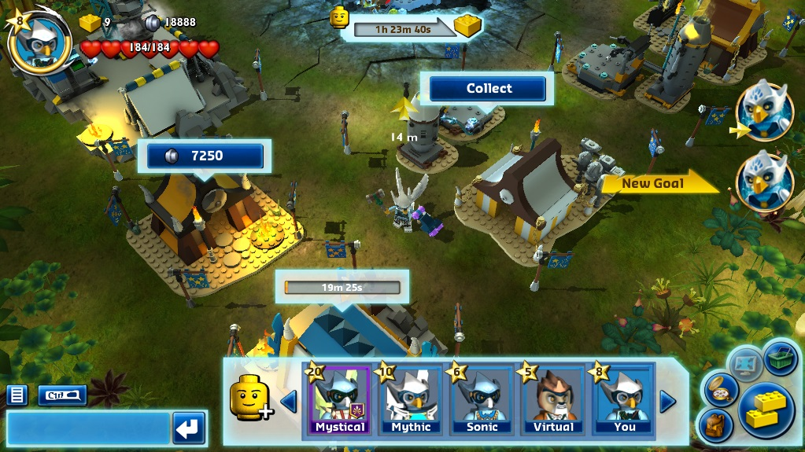
Houses will produce Studs, which can be used for upgrading or making other buildings, in addition to buying items.
Blacksmiths and Armorers are used for crafting items, as mentioned in the last section.
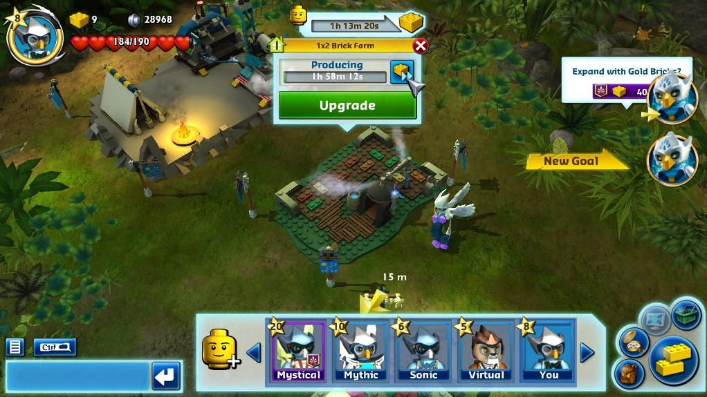
There are buildings which give you bricks for crafting, as mentioned before.
Some buildings will produce Powers (such as deployable turrets and groups of troops) for you to use in the gameworld.
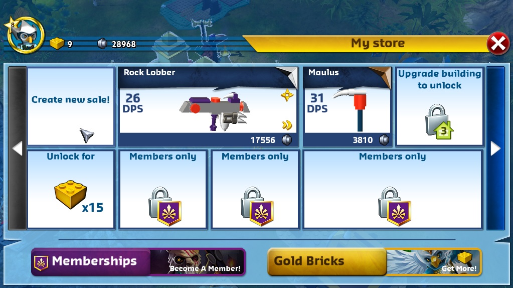
One special building, unlocked at level 7, allows you to buy or sell items from players (using Studs as the currency).
A seller may place an item into their store and wait for someone to buy it while the seller goes on adventures,
instead of having to seek out potential buyers in the gameworld.
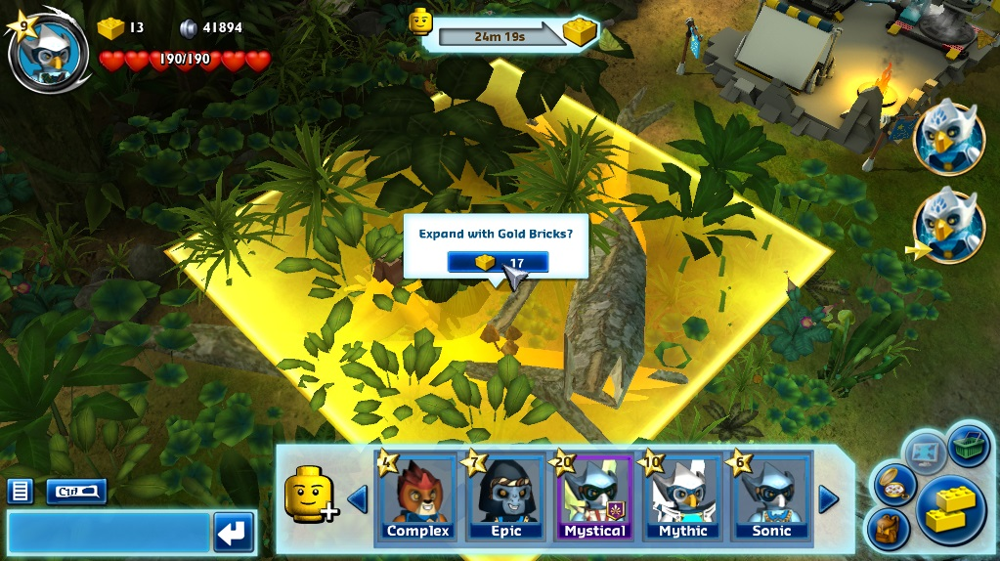
More space for Outposts can be acquired by spending Gold Bricks, or regular Studs if you're a Premium member.
Outposts are acquired very early in the game (earlier than when you get your first Property in LEGO Universe),
and it essentially serves as your central hub, which I think is fantastic!
By visiting the Outposts of friends, one can collect Studs which go toward the collection of a Gold Brick.
Overview:
Chima Online is a refreshing gameplay experience for me, considering I played four different MMOs in the past.
Pros:
*Outposts: I love the idea of player-owned homes being the player's hub, rather than a town in the gameworld.
*Crafting: Being able to re-color an item while crafting it is the bomb.
*Obstacle Courses: Bored of whacking endless waves of enemies? These keep things fresh. They often make you have to think for a moment.
*Voice Dialog: Makes questing a bit more fun.
Cons:
*Instructions disappear after the respective item has been crafted.
I do not know whether this is a bug or not, but I can't imagine it would be considering how polished everything is.
*No infinite venue of buyable health consumables. Because of the scarcity of health refills, adventuring can be rough at times.
Fortunately, Chi power-ups make a difference.
*4-person per zone limit sometimes makes linking up with friends impossible.
If you're a parent, I'd like to let you know Chima Online is totally child safe.
Trust me, safety is one of The LEGO Group's first concerns when it comes to online experiences.
If you're a gamer who is tired of endless enemy-grinding, I think you will find the Outposts and obstacle courses to be refreshing.